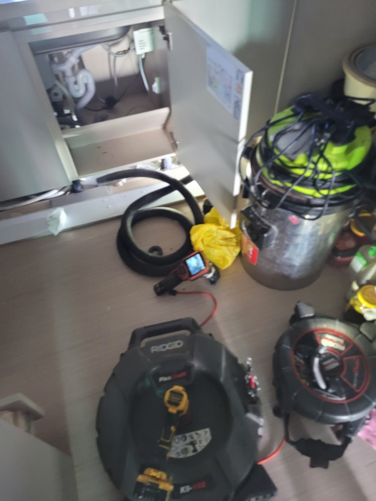
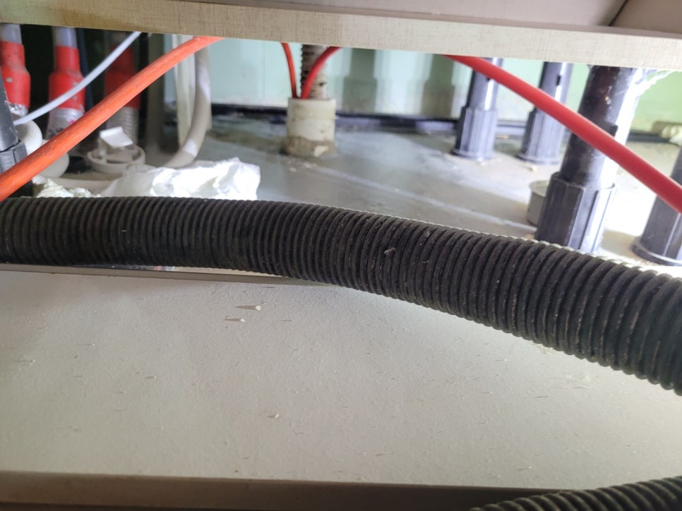
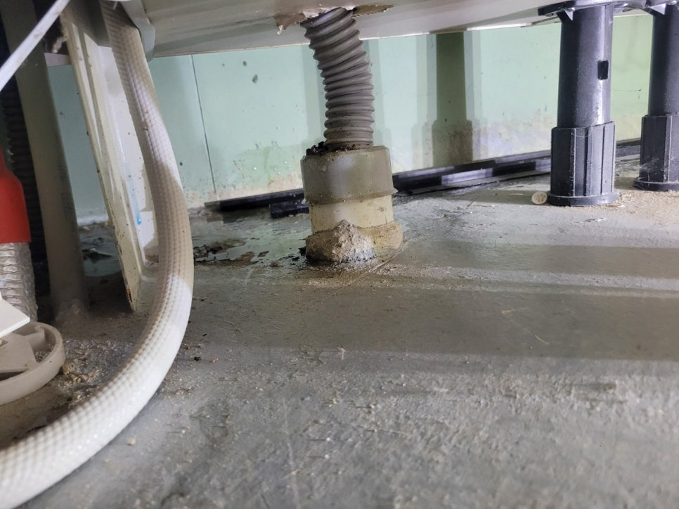
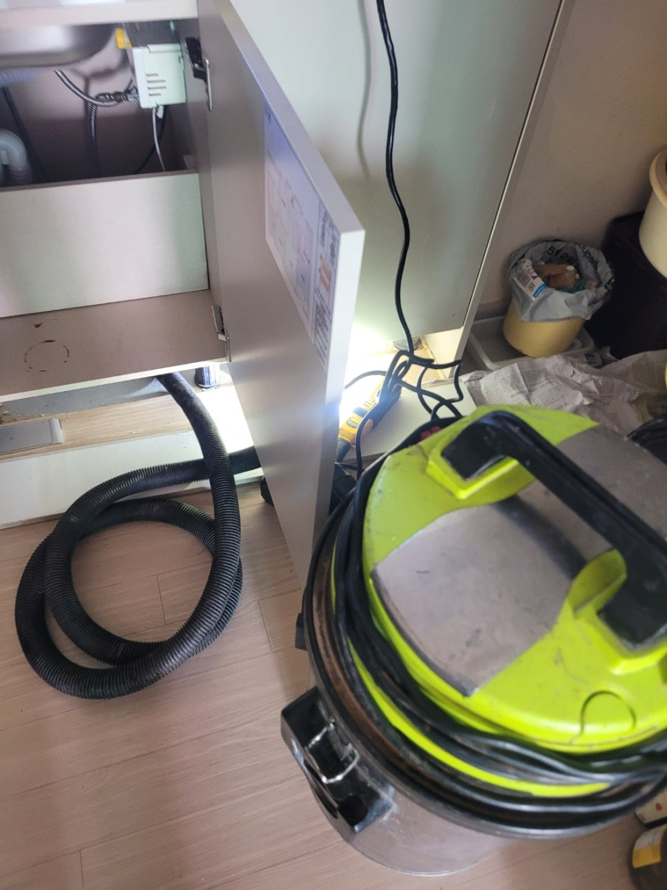
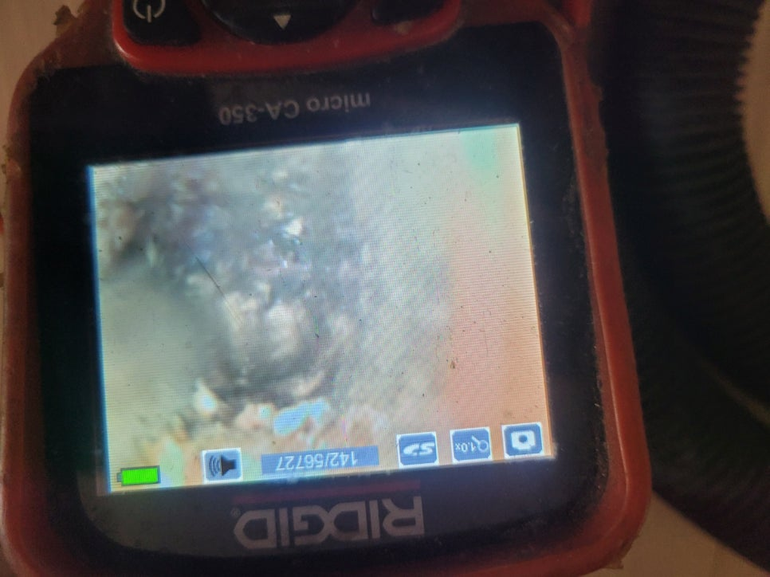
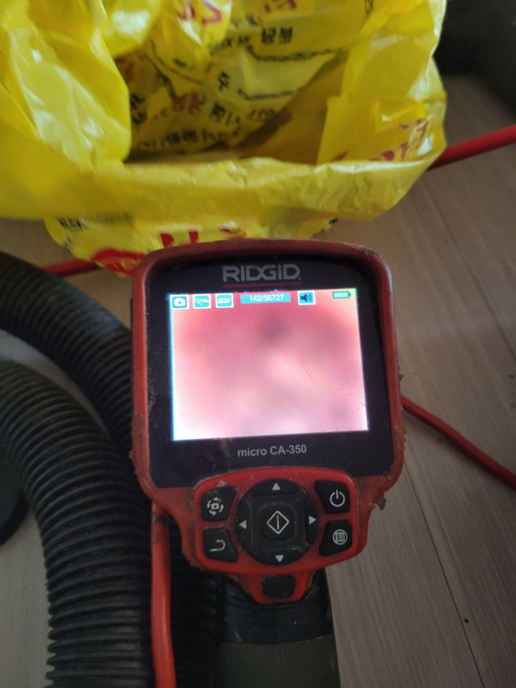

🏠 수원 행궁동 싱크대배수관막힘 지동 하수구뚫는곳 설비업체
수원 행궁동 싱크대막힘 전문 시공 후기

📋 작업 개요
- 위치: 수원 행궁동, 행궁동, 수원
- 서비스 유형: 싱크대막힘, 변기막힘, 하수구막힘, 배관막힘, 맨홀막힘, 누수수리, 역류해결, 뚫는업체, 배관청소
- 작업 일시: 2025. 8. 24. 21:36
- 업체명: 하수구수사대 (010-5615-2118)
🔍 문제 상황
안녕하세요.
배관전문업체 "하수구수사대" 입니다.
수원 행궁동 싱크대배수관막힘 지동 하수구뚫는곳 설비업체
생활하면서 생각지도 못한 문제가 발생한다면 모든 분들이 걱정하시죠.
특히나 물 사용이 잦은 주방 혹은 화장실에서 어느 순간 막힘 문제가 발생해 물을 아예 사용하지 못하는 상황일 때에는 얼른 전문 업체에 문의하시는 것이 좋아요.
주방 싱크대에 물이 고이는 현상이 발생한다면 밥을 하거나 식재료를 다듬는 등의 일에 차질이 빚어질 수 밖에 없습니다.
그리고 밥을 먹은 후에 설거지 하는 것도 어려워지기 때문에 막힘 현상이 생기면 신속하게 도움을 받으시는 게 좋아요.
지난 주에도 한 고객님 댁에 막힘 증상이 발생하여 근본적인 문제를 찾아 해결해 드렸죠.
이번 현장에서는 싱크대를 교체한 지 얼마 안 되었는데 막힘 증상이 발생한다는 것이 의아했거든요.
고객님이 직접 해결하기 힘든 부분이기 때문에 전문 업체인 저희들에게 전화주셨다고 해요.
현장을 방문해 제일 먼저 점검해 본 부분은 바로 주방 하부장 아래였죠.
저희가 봤을 땐 이미 물이 넘쳐 흘러서 축축하게 젖어있는 상태였고, 물의 양도 굉장히 많을 것으로 보였습니다.

🔎 원인 분석
💡 전문가 진단: 정밀 진단 장비를 사용하여 슬러지의 고착 여부를 판명하고 타격/세척 작업을 실시했습니다.
만약 이 상태로 계속 방치하면 곰팡이가 생기는 것은 물론 아랫 세대에도 누수 문제가 발생할 수 있어서 바로 작업을 진행했어요.
본격적인 작업을 하기 전에 막힌 싱크대에 연결되어 있는 주름관을 분리해 살펴보니 예상대로 많은 이물질이 들어 있더라구요.
이 까만 얼룩들이 찌꺼기라고 보시면 되는데 이게 주름관 내부에 달라붙어 있는 것이죠.
심지어 하수도 위쪽에도 까만 얼룩들이 다량 쌓여있어서 완전히 제거할 수 있도록 석션기를 사용했습니다.
석션기는 주름관에 쌓인 이물질 뿐만 아니라 하수관 내부에 쌓인 것들까지도 흡입할 수 있는 장비라고 보시면 되고 이같은 막힘 현상이 발생했을 때 알맞은 장비예요.
이물질 때문에 입구 쪽이 막힌 상황도 이 석션기만 있으면 쉽게 해결할 수 있답니다.
본격적으로 배관을 뚫기 전 석션 작업을 통해 배관 내부를 일단 청소해야 하는데, 문제를 해결할 수 있는 방식을 알아내기 위한 단계로 보시면 될 것 같아요.
석션기를 세게 돌렸는데도 막힘 현상이 해결되지 않는 상태여서 하수관 깊은 곳까지 보다 정확하게 확인하기로 했어요.
이번에는 배관 내시경 기기를 투입해 배관 깊숙한 곳까지 점검합니다.
여기 보이는 화면에서는 전부 빨간색으로만 찍혀있죠.
설비 헤드쪽에 전등이 달려있는데, 그 불로 기름때를 비춰보면 이처럼 빨갛게 보여요.
다시말해, 배관 속에 기름찌꺼기가 잔뜩 쌓여있다면 모니터 상에서 빨간색으로 나타난다는 거에요.
좀 더 확실히 점검해 본 결과 배관 청소가 안 되어 있는 상황이었습니다.

🔧 작업 과정
자꾸 싱크대 물고임이 발생하는 것은 하수관 안에 오랫동안 축적되어 굳어진 기름때라고 판단하게 되었습니다.
그렇기 때문에 음식물 찌꺼기를 청소하기에 적합한 장비를 가지고 깔끔하게 해결해 드리기로 결정했어요.
제거 작업을 할 때 쓰는 장비, 바로 플렉스 샤프트입니다.
샤프트 케이블 끝 부분에는 붙어있는 헤드가 체인 형태이다 보니 큰 이물질도 부셔서 쉽게 제거되도록 만듭니다.
이 장비로 잘게 부수면 처음에는 끄떡없던 이물질도 싹 다 배관 밖으로 내보낼 수 있거든요.
물론 배관의 상태와 덩어리의 위치를 살피면서 장비를 조절해야 한다는 점이 중요합니다.
다시 작업을 진행할 때마다 배관 내시경 카메라를 통해 배관 내부 모습을 꼼꼼하게 체크하였고, 도중에 석션작업까지 잊지 않고 기름찌꺼기 없는 청결한 배관을 만들 수 있게 신경써 드렸어요.
저희 업체는 물이 흐르게만 조치하고 끝내지 않습니다.
문제의 확실한 이유를 특정하고 완전히 제거해서 막힘 현상을 해결하는 것은 물론 하수관 내부까지 꼼꼼히 점검하여 이물질들을 모두 제거해 드립니다.
통수 테스트를 진행하니 물이 고이는 현상 없이 시원스럽게 배수되어 작업이 완벽히 진행되었음을 알 수 있어요.
모든 청소가 끝나면 석션기의 통에 배수관 내부에 쌓여있었던 음식물찌꺼기들이 보관됩니다.
내부를 살펴보면 아랫 부분에 각종 찌꺼기들이 가라앉아 있는 것을 볼 수 있는데요.
이건 하수관에 바로 부으면 막힐 수 있어서 필터를 이용해 건더기들을 한 번 제거한 후 각각 폐기해야 합니다.
대부분의 경우 여기까지 하면 모든 작업이 끝나게 됩니다.
이번에 방문했었던 현장은 주름관 자체가 굉장히 오래되고 낡은 상태였어요.
주름관을 새것으로 교체했더니 반복되었던 싱크대 막힘 문제가 쉽게 해결되었어요.
집에서 싱크대가 지속적으로 막힐 경우 시중의 배관 세정제를 이용해서는 막힘을 뚫기 어려워요.
그리고 슬러지가 오랫동안 쌓여있다면 전문 도구를 사용해서 신중하게 제거해야 합니다.
전문업체의 도움을 요청해야 신속하게 문제가 해결됩니다.
그렇기 때문에 내시경 장비나 배관 막힘 전문 도구를 갖고 있는 업체를 이용하셔야 작업이 원활하게 진행된다는 부분을 기억해 주시기 바랍니다.


✅ 작업 완료
막힘이 발생해 배관을 수리해야 하는 분들은 실력과 장비를 갖춘 저희업체에 맡겨주시면 신속하고 정확하게 해결해 드릴 것을 약속드립니다.
하수구수사대 010 2340 2118
#행궁동하수구막힘 #행궁동싱크대막힘 #행궁동싱크대역류 #행궁동배수관막힘 #행궁동배관뚫는곳 #행궁동설비 #행궁동맨홀막힘 #행궁동하수구뚫는업체 #행궁동변기막힘
#지동하수구막힘 #지동싱크대막힘 #지동싱크대역류 #지동하수구역류 #지동화장실막힘 #지동설비 #지동하수구뚫는곳 #지동하수구뚫는업체
#지동변기막힘




⚠️ 베란다 누수 및 방수 관리 방법
- ✅ 비가 많이 올 때 창틀 주변이나 아래층 천장에 얼룩이 생기는지 정기적으로 확인해 보세요.
- ✅ 우수관 주변 실리콘 마감이 들뜨거나 깨진 틈새가 있는지 손상 여부를 수시로 체크하세요.
- ✅ 베란다 바닥 타일의 줄눈(메지)이 소실되면 그 틈으로 물이 침투하여 누수가 유발됩니다.
- ✅ 누수 의심 증상 발견 시 방치하면 아래층 손실이 커지므로 즉시 전문가의 진단을 받으십시오.
💡 핵심 정리
- 확실한 장비 작업(내시경 점검 및 샤프트 스케일링)으로 원인을 뿌리 뽑습니다.
- 작업 후 1년 이내에 동일한 부위 재발 시 100% 무상 A/S 서비스를 보장합니다.
- 서울 · 경기 · 인천 전 지역에 24시간 언제든 긴급 출동할 수 있도록 항시 대기 중입니다.
❓ 자주 묻는 질문 (FAQ)
🚨 수원 행궁동 싱크대막힘 문제로 고민이신가요?
정확한 원인 진단과 확실한 시공으로 재발 없는 해결을 약속드립니다.
24시간 긴급 출동 | 서울 · 경기 · 인천 전지역 | 1년 내 재발 시 무상 A/S